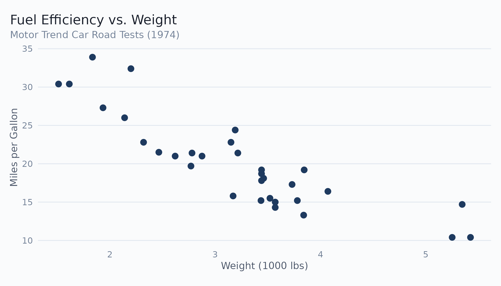
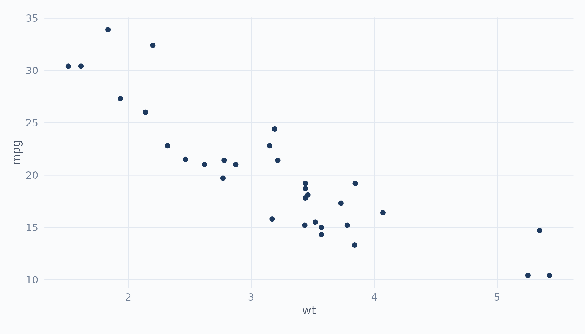
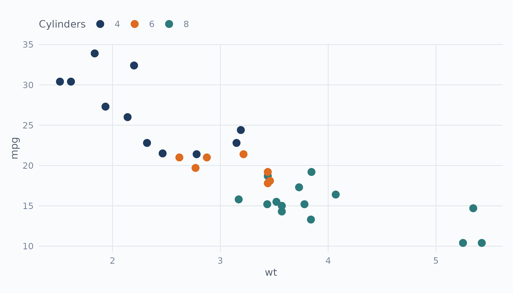
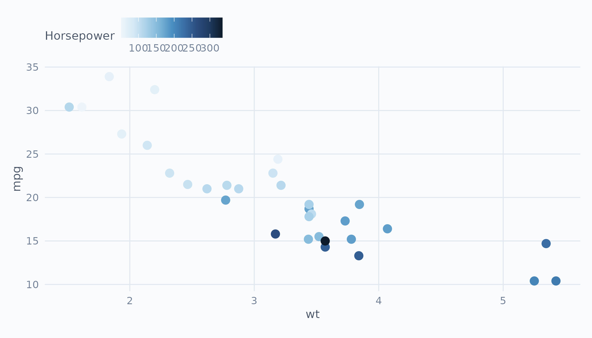
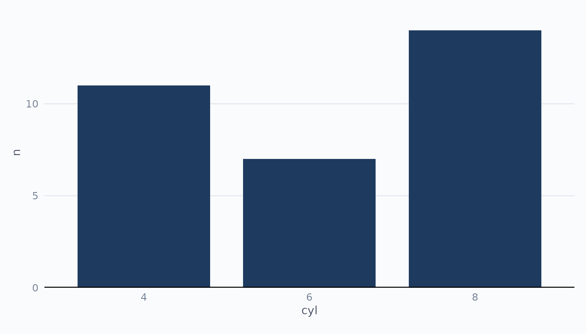
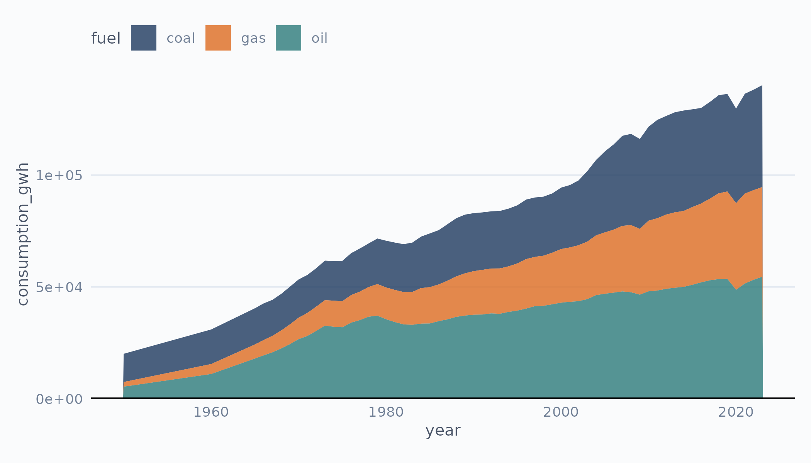
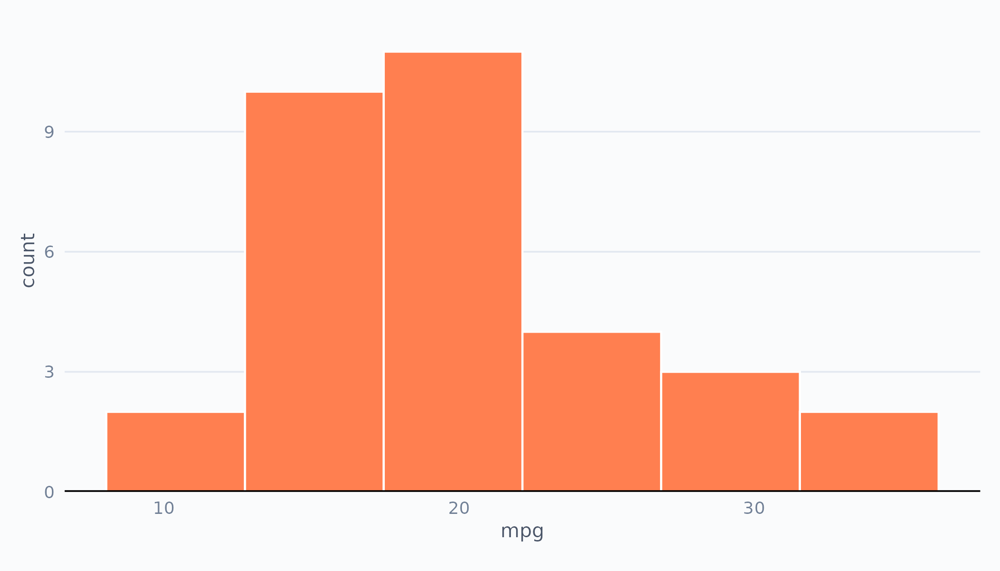

EKIO Theme
theme_ekio() applies EKIO’s visual identity to any
ggplot2 plot. It builds on theme_minimal() with curated
typography, spacing, and color choices.
ggplot(mtcars, aes(wt, mpg)) +
geom_point(color = ekio_blue["700"], size = 2.5) +
labs(
title = "Fuel Efficiency vs. Weight",
subtitle = "Motor Trend Car Road Tests (1974)",
x = "Weight (1000 lbs)",
y = "Miles per Gallon"
) +
theme_ekio()
The grid parameter controls which major grid lines are
drawn:
ggplot(mtcars, aes(wt, mpg)) +
geom_point(color = ekio_blue["700"]) +
theme_ekio(grid = "xy")
Use theme_ekio_map() for spatial visualizations — it
removes axes and repositions the legend.
Color Palettes
ekioplot ships with ~30 palettes across five categories. Use
list_ekio_palettes() to explore them:
str(list_ekio_palettes())
#> List of 5
#> $ categorical: chr [1:7] "cool" "minimal" "contrast" "full" ...
#> $ small_group: chr [1:6] "duo_warm" "duo_cool" "trio_bold" "trio_cool" ...
#> $ scientific : chr [1:4] "okabe_ito" "viridis" "inferno" "plasma"
#> $ sequential : chr [1:8] "blue" "teal" "gray" "orange" ...
#> $ diverging : chr [1:3] "blue_orange" "blue_red" "teal_orange"Access any palette with ekio_pal():
ekio_pal("contrast")
#> [1] "#1E3A5F" "#DD6B20" "#2C7A7B" "#D69E2E" "#805AD5" "#C53030"
ekio_pal("blue", n = 5)
#> [1] "#EEF5FA" "#D4E8F5" "#A8D0E8" "#7EB6D8" "#4A90C2"Palette types
-
Categorical:
contrast,cool,minimal,full,muted,binary,political -
Small-group:
duo_warm,duo_cool,trio_bold,trio_cool,quad_earth,quad_vivid -
Scientific:
okabe_ito,viridis,inferno,plasma -
Sequential:
blue,teal,gray,orange,purple,red,green,amber -
Diverging:
blue_orange,blue_red,teal_orange
Visualize any palette with show_ekio_palette():
show_ekio_palette("contrast")
Scale Functions
ekioplot provides ggplot2 scales for both discrete and continuous data.
Discrete scales
ggplot(mtcars, aes(wt, mpg, color = factor(cyl))) +
geom_point(size = 3) +
scale_color_ekio_d("contrast") +
labs(color = "Cylinders") +
theme_ekio(grid = "xy")
Continuous scales
Sequential and diverging palettes work with continuous data:
ggplot(mtcars, aes(wt, mpg, color = hp)) +
geom_point(size = 3) +
scale_color_ekio_c("blue") +
labs(color = "Horsepower") +
theme_ekio(grid = "xy")
Fill variants are available as scale_fill_ekio_d() and
scale_fill_ekio_c().
Recipe Functions
Recipe functions are high-level wrappers that create complete, publication-ready plots with smart defaults.
Bar plot
cyl_counts <- as.data.frame(table(cyl = mtcars$cyl))
names(cyl_counts)[2] <- "n"
ekio_barplot(cyl_counts, cyl, n)
Area plot
data(fuels)
world_fuels <- fuels[fuels$entity == "World" & fuels$year >= 1950, ]
ekio_areaplot(world_fuels, year, consumption_gwh, fill = fuel)
Smart aesthetic detection
Recipe functions automatically detect whether the color/fill argument is:
- Missing — uses EKIO blue as default
-
A color string (e.g.,
"steelblue") — uses that color directly - A variable — maps it and applies the appropriate EKIO scale
ekio_histogram(mtcars, mpg, fill = "coral")
Color Scales
Four named color scales are exported for direct use:
ekio_blue, ekio_gray, ekio_teal,
and ekio_orange. Each provides 10 shades from
"50" (lightest) to "900" (darkest).
ekio_blue["700"]
#> 700
#> "#1E3A5F"
ekio_gray["300"]
#> 300
#> "#E2E8F0"Named accent colors are available in ekio_accent:
ekio_accent
#> blue orange teal amber purple red green gray
#> "#1E3A5F" "#DD6B20" "#2C7A7B" "#D69E2E" "#805AD5" "#C53030" "#38A169" "#718096"GT Tables
Apply EKIO styling to gt tables with
gt_theme_ekio():
library(gt)
head(mtcars[, 1:5], 8) |>
gt() |>
gt_theme_ekio(add_footer = FALSE)
#> Warning: Character vector names are ignored. Instead of a named character
#> vector, use a named list to define Sass variables.
#> Warning: Character vector names are ignored. Instead of a named character
#> vector, use a named list to define Sass variables.
#> Warning: Character vector names are ignored. Instead of a named character
#> vector, use a named list to define Sass variables.
#> Warning: Character vector names are ignored. Instead of a named character
#> vector, use a named list to define Sass variables.
#> Warning: Character vector names are ignored. Instead of a named character
#> vector, use a named list to define Sass variables.
#> Warning: Character vector names are ignored. Instead of a named character
#> vector, use a named list to define Sass variables.
#> Warning: Character vector names are ignored. Instead of a named character
#> vector, use a named list to define Sass variables.
#> Warning: Character vector names are ignored. Instead of a named character
#> vector, use a named list to define Sass variables.
#> Warning: Character vector names are ignored. Instead of a named character
#> vector, use a named list to define Sass variables.
#> Warning: Character vector names are ignored. Instead of a named character
#> vector, use a named list to define Sass variables.
#> Warning: Character vector names are ignored. Instead of a named character
#> vector, use a named list to define Sass variables.
#> Warning: Character vector names are ignored. Instead of a named character
#> vector, use a named list to define Sass variables.
#> Warning: Character vector names are ignored. Instead of a named character
#> vector, use a named list to define Sass variables.
#> Warning: Character vector names are ignored. Instead of a named character
#> vector, use a named list to define Sass variables.
#> Warning: Character vector names are ignored. Instead of a named character
#> vector, use a named list to define Sass variables.
#> Warning: Character vector names are ignored. Instead of a named character
#> vector, use a named list to define Sass variables.
#> Warning: Character vector names are ignored. Instead of a named character
#> vector, use a named list to define Sass variables.
#> Warning: Character vector names are ignored. Instead of a named character
#> vector, use a named list to define Sass variables.
#> Warning: Character vector names are ignored. Instead of a named character
#> vector, use a named list to define Sass variables.| mpg | cyl | disp | hp | drat |
|---|---|---|---|---|
| 21.0 | 6 | 160.0 | 110 | 3.90 |
| 21.0 | 6 | 160.0 | 110 | 3.90 |
| 22.8 | 4 | 108.0 | 93 | 3.85 |
| 21.4 | 6 | 258.0 | 110 | 3.08 |
| 18.7 | 8 | 360.0 | 175 | 3.15 |
| 18.1 | 6 | 225.0 | 105 | 2.76 |
| 14.3 | 8 | 360.0 | 245 | 3.21 |
| 24.4 | 4 | 146.7 | 62 | 3.69 |